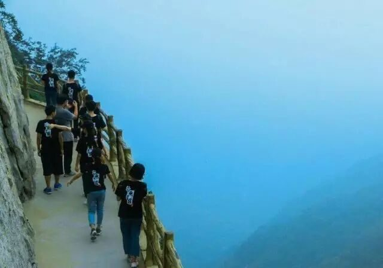
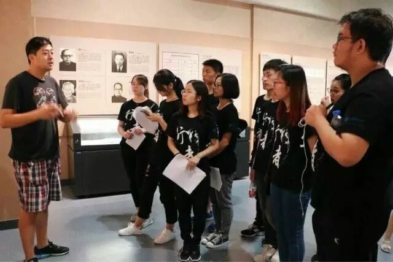

【行者明信片·叁·不平凡的行者，不平凡的路】
不平凡的行者
不平凡的路
纸上得来终觉浅，绝知此事要躬行。世界的本来模样，本需要走一遭才能略知一二。路在脚下，而我们在路上。
——李亚梅


第一站
中国文字博物馆
一片甲骨惊天下
汉字源流释古今
它，与我们息息相关；它，贯穿古今；它，记载着我们的故事……我们却对它的过去知之甚少。穿越时空的界限，汉字负载着不羁使命与我们相遇。记录着过去的繁盛兴衰，搭起着通往未知世界的桥梁，一笔一划，是历史，是文化的传承与延续。
从无到有，从符号到完整的造字体系，经历过变革，却依然具有强大的生命力，其统一将陌生又熟悉的我们紧密联系在一起。文字温暖了岁月，惊艳了时光，犹如一架时光机带我们回到过去，将历史的所有展现在我们眼前，其发挥的巨大作用不愧称人类历史上最大的发明。
第二站
中岳嵩山
&
三皇寨
三十六峰危似冠
晴楼百尺独登看
它，素来以秀、古、奇、俗、幽名扬四海；它，荟五岳之精华，纳三山之灵气；它，让许多慕名而来的人们望而却步。面对它时，只能情不自禁感叹大自然的鬼斧神工。中岳嵩山，被列进了行者的征服之册。
诗经有云“嵩高惟岳，峻极于天”，怀揣一颗敬畏自然同时想要征服的心，踏上了通往峰顶的台阶。满怀自信，渐失体力，重整旗鼓，一鼓作气登顶，沿途风声，鸟鸣声，潺水声，声声入耳，望不到尽头的台阶就像一根无形的绳子，牵引着我们一步一步前行，行者无疆，不到终点，怎能轻易停步。“自古山川秀，太少无穷奥”，行至半山腰，秀丽景色浮现眼前，巍峨，险峻，峭拔，太多赞美之词溢于言表，“嵩峰三十六，皆在青云端”，云雾缭绕，仿佛置身仙境。
山高绝顶我为峰，到达山顶，站在三皇寨面前，激动的同时对大自然加深了赞叹之意和敬畏之情。不登高山不知天之高，用脚步丈量嵩山，行者的足迹终将留在嵩山的记忆里。
第三站
龙门石窟
石窟造就千佛是
峭壁高添万圣台
它，佛光万年普照；它，窟龛犹如蜂巢，排列整齐；它，形制瑰异、琳琅满目。如果说嵩山是大自然的鬼斧神工，那么龙门石窟就是人类的巧夺天工。一尊尊佛像，或庄严肃穆，或俏皮可爱，凌厉中不乏逗趣，威武中不失风雅，真实体现了人类杰出的艺术创造力，也是唐朝高度的文化水平和成熟的社会的展现。然美好的东西总会招来祸端，盗贼的偷盗和破坏，加上水的侵蚀和风化，年代的记忆使佛像残缺不全，使得今天的每一尊佛像都弥足珍贵。
走过才知山之高，峰之险，路之远，行之疲，然才知历史，领文化，悟时光，展未来。行者无疆，没有终点的行走，期待下一站的再次相遇。
“
行者，一直在路上……
”
河南行
且将新火试新茶
诗酒趁年华
行者无疆
♦
贰
公众号：行者无疆实践团
微博号：行丶者丶无丶疆
邮箱：2758025831@qq.com
文 | 李亚梅
责编 | 王梓腾
审核 | 章静 彭博